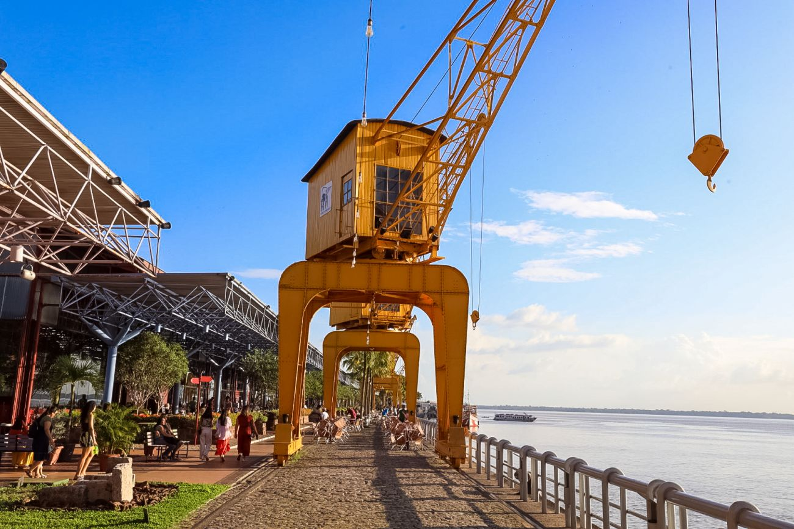

Ilha de Cotijuba


Experiência no local
- Gastronomia regional
- Música ao vivo
- Eventos culturais
Atrações
- Passeio de barco
- Restaurante
- Evento
Gastos no local

Restaurantes
Refeições completas
R$ 30,00 a R$ 80,00

Sorveteria
Doces e sobremesas
R$ 10,00 a R$25,00

Passeio de barco
Tour pela orla
R$ 20,00 a R$ 50,00
Sobre a estação das docas
A Estação das Docas é um dos principais pontos turísticos de Belém.Localizada na Baía do Guajará, reúne gastronomia, cultura e lazer em um só lugar. O espaço conta com armazéns e uma vista incrível do pôr do sol.
- Amazon Beer
- Bêra Gastronomia
- Marujos Restaurante
- Musica ao vivo
- Pôr do Sol
